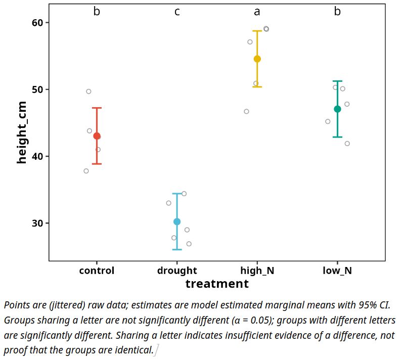

From raw data to a reviewer-ready statistics report in one line of R.
rfriend runs the test, checks the assumptions, transforms the data when needed, does the post hoc comparisons, and writes the result to Word, PDF, Excel or R Markdown. Tables come with compact letter displays and figures are publication-ready ggplot2 objects you can restyle.
It is built for people who need sound statistics but do not live in R: MSc and PhD students writing a thesis, researchers in plant, life and environmental sciences, and companies that analyse experiments a few times a year.
Full documentation: https://delde001.github.io/rfriend/

Try it in 60 seconds
install.packages("rfriend")
library(rfriend)
# Not sure which test to use? Ask the wizard, and let it run the answer.
f_stat_wizard(Sepal.Length ~ Species, data = iris, run = TRUE)
# A real design: a randomised complete block field trial with repeated
# measures (bundled teaching dataset), analysed with a mixed model and
# written to a Word report.
data(plant_trial)
plant_trial$time_f <- factor(plant_trial$time_weeks)
f_lmer(height_cm ~ treatment * time_f + (1 | block/plant_id),
data = plant_trial,
output_type = "word")The report contains the assumption checks, the Type III table, the estimated means with compact letters, and the effect and interaction plots.
What rfriend does for you
Choose the test. f_stat_wizard() (beta) reads your formula and data, checks variable types, normality and variance, and recommends an f_ function as ready-to-run code.
Run the test, properly. Each test function checks its assumptions, offers a Box-Cox or bestNormalize transformation when they fail, runs post hoc comparisons, and handles several response variables in one call (y1 + y2 ~ treatment), with a note on multiple testing.
| Question | Function |
|---|---|
| Two groups |
f_t_test(), f_wilcox_test()
|
| More than two groups |
f_aov(), f_kruskal_test()
|
| Repeated measures, blocks, nesting |
f_lmer(), f_friedman()
|
| Continuous predictors | f_lm() |
| Counts, proportions, binary outcomes | f_glm() |
| Categorical association | f_chisq_test() |
| Which model fits best | f_model_compare() |
Explore and prepare your data. f_summary(), f_scan() (density, boxplot and QQ panel per variable), f_corplot(), f_boxplot(), f_hist(), f_qqnorm(), f_outliers(), f_remove_outliers(), f_boxcox(), f_bestNormalize(), f_factors() and f_long().
Everyday helpers. f_clear() clears the workspace and restarts R, f_setwd() sets the working directory to the current script, f_example_data() gives access to bundled example files, plus f_open_file(), f_pander(), f_rename_columns(), f_rename_vector(), f_load_packages() and f_theme().
More examples
# Summary table of a data frame
f_summary(plant_trial)
# Two responses analysed in sequence, saved to Word
f_aov(Sepal.Width + Sepal.Length ~ Species,
data = iris,
output_type = "word")
# Boxplots of several variables split by two factors
f_boxplot(hp + disp ~ gear * cyl,
data = mtcars,
output_type = "word")
# Box-Cox transformation of a single variable
transformed <- f_boxcox(plant_trial$biomass_g)
# Bundled example files
f_example_data() # list files
path <- f_example_data("plant_trial_raw.csv") # path to one file
raw <- read.csv(path)Learn rfriend
A step-by-step video course takes you from installing R to a complete, defensible thesis analysis with rfriend. Details: [rfriend.subscribepage.io].
Workshops for departments, graduate schools and companies are available on request: plantmind@proton.me.
Installation
rfriend requires R (>= 4.4.0). PDF and Word output need Pandoc (>= 3.2), which is bundled with RStudio.
install.packages("rfriend") # CRAN release
# install.packages("devtools")
devtools::install_github("delde001/rfriend") # development versionKnown issues
- On loading you may see messages about S3 method overwrites (
nobs.fitdistr,nobs.multinom) caused by imported packages (MuMIn,rstatix). They do not affect results.
Contributing
Bug reports and feature requests are welcome on GitHub. Pull requests should be tested locally, documented with roxygen2, and follow the existing style.
License
GPL-3. See https://www.R-project.org/Licenses/GPL-3.
Contact
Dr. ir. Sander H. van Delden, plantmind@proton.me